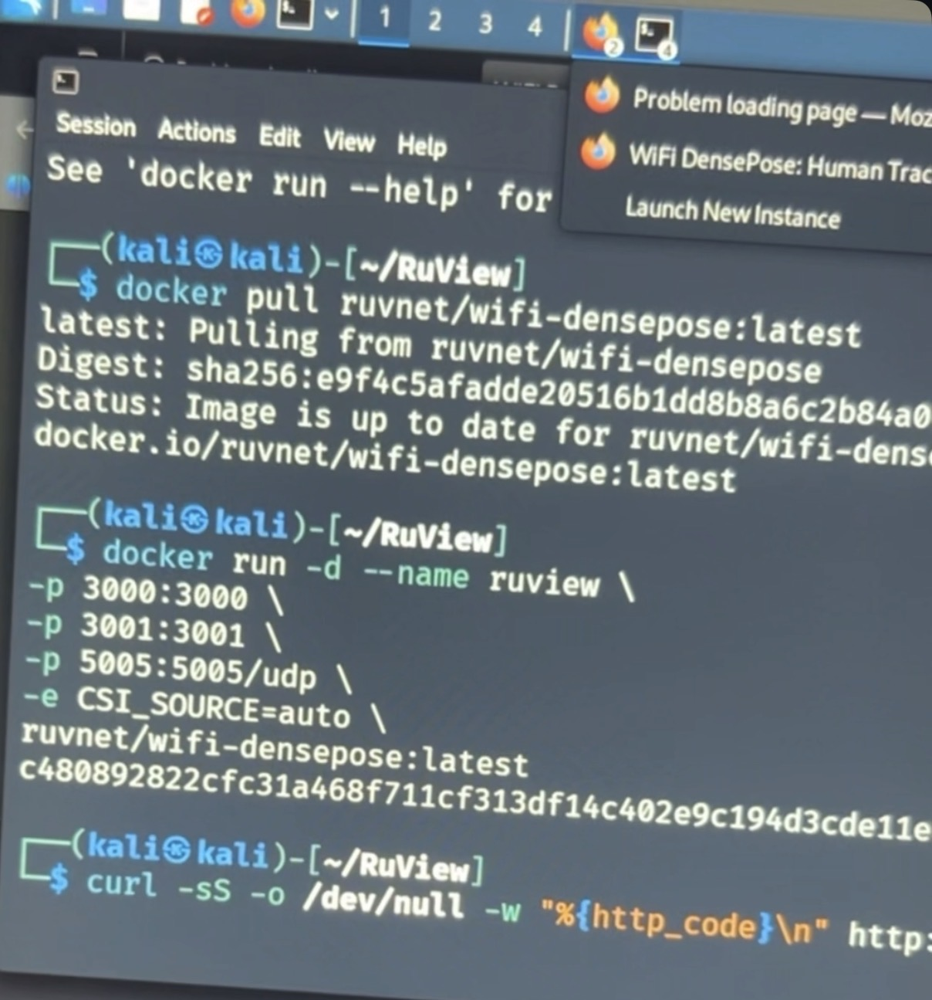
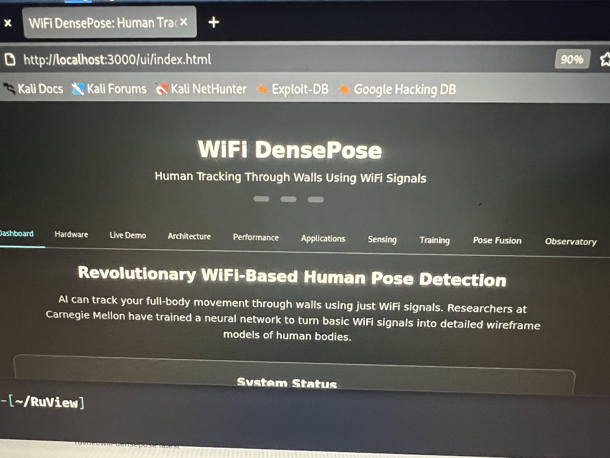
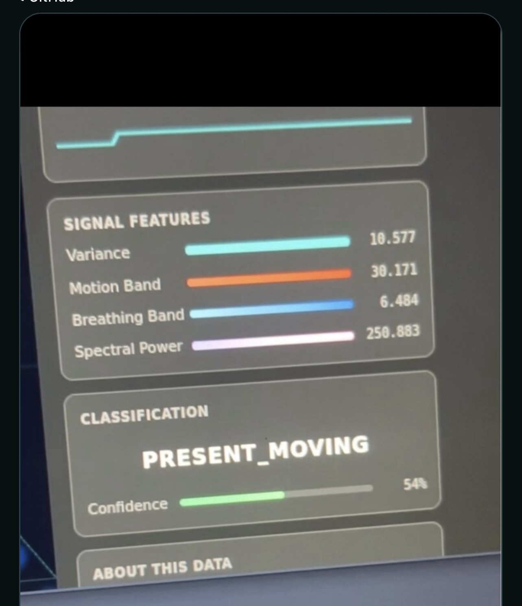

Kali virtual machine and Docker deployment.
Local web interface and simulation views.
Broader sensor integration continued under AHSIN.
No through-wall or vital-sign accuracy result is claimed.
Engineering work
Make each layer observable.
This lab documents environment configuration, container startup, route and DNS troubleshooting, and the local interface. My contribution is the deployment and integration work; the sensing application is upstream software.
Evidence boundary: a running container, loaded page, or animated heatmap does not prove a live sensor pipeline. These are historical records and include simulation.
Evidence
Selected build photographs.



Troubleshooting
Lessons from the build.
| Issue | Recorded lesson |
|---|---|
| VM DNS failure | Check resolver configuration separately from connectivity. |
| Compose unavailable | Confirm the installed tooling and command form. |
| Dashboard route error | Verify the image revision, UI assets, and route. |
| Broken multi-line command | Keep the image name and options in one complete command. |
| Active-looking simulation | Require receiver records, source labels, and stale-data checks. |
Next chapter
The broader AHSIN project.
AHSIN expands the work into sensor telemetry, operator dashboards, and permission-controlled AI tools. This site stays focused on the earlier Wi-Fi/RuView lab.
Privacy and scope
Controlled, consent-based experiments.
Selected images were reviewed for private information and stripped of original metadata. Address-bearing screenshots and raw originals were removed from the current repository tree; earlier Git history is separate. Sensing work requires authorization and participant consent.